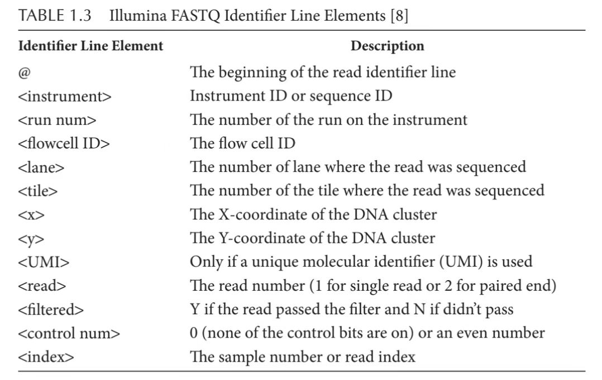
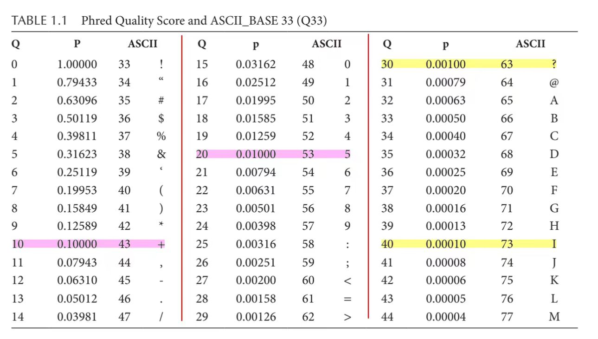
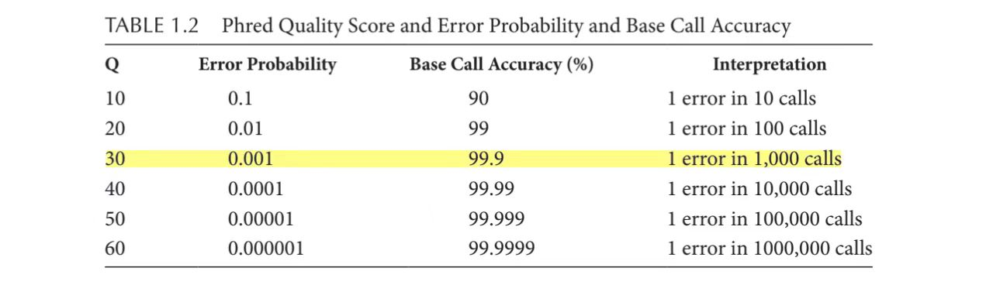

#> ─ Session info ───────────────────────────────────────────────────────────────
#> setting value
#> version R version 4.5.1 (2025-06-13 ucrt)
#> os Windows 11 x64 (build 26100)
#> system x86_64, mingw32
#> ui RTerm
#> language en
#> collate Chinese (Simplified)_China.utf8
#> ctype Chinese (Simplified)_China.utf8
#> tz Asia/Shanghai
#> date 2025-11-15
#> pandoc 3.6.3 @ D:/RStudio/resources/app/bin/quarto/bin/tools/ (via rmarkdown)
#> quarto NA @ D:\\RStudio\\RESOUR~1\\app\\bin\\quarto\\bin\\quarto.exe
#>
#> ─ Packages ───────────────────────────────────────────────────────────────────
#> package * version date (UTC) lib source
#> BiocManager 1.30.27 2025-11-14 [1] CRAN (R 4.5.1)
#> cachem 1.1.0 2024-05-16 [1] CRAN (R 4.5.1)
#> cli 3.6.5 2025-04-23 [1] CRAN (R 4.5.1)
#> devtools 2.4.6 2025-10-03 [1] CRAN (R 4.5.2)
#> digest 0.6.38 2025-11-12 [1] CRAN (R 4.5.2)
#> ellipsis 0.3.2 2021-04-29 [1] CRAN (R 4.5.2)
#> evaluate 1.0.5 2025-08-27 [1] CRAN (R 4.5.2)
#> fastmap 1.2.0 2024-05-15 [1] CRAN (R 4.5.1)
#> fs 1.6.6 2025-04-12 [1] CRAN (R 4.5.1)
#> glue 1.8.0 2024-09-30 [1] CRAN (R 4.5.1)
#> htmltools 0.5.8.1 2024-04-04 [1] CRAN (R 4.5.1)
#> htmlwidgets 1.6.4 2023-12-06 [1] CRAN (R 4.5.2)
#> jsonlite 2.0.0 2025-03-27 [1] CRAN (R 4.5.1)
#> knitr 1.50 2025-03-16 [1] CRAN (R 4.5.1)
#> lifecycle 1.0.4 2023-11-07 [1] CRAN (R 4.5.1)
#> magrittr 2.0.4 2025-09-12 [1] CRAN (R 4.5.2)
#> memoise 2.0.1 2021-11-26 [1] CRAN (R 4.5.1)
#> pkgbuild 1.4.8 2025-05-26 [1] CRAN (R 4.5.2)
#> pkgload 1.4.1 2025-09-23 [1] CRAN (R 4.5.2)
#> purrr 1.2.0 2025-11-04 [1] CRAN (R 4.5.2)
#> R6 2.6.1 2025-02-15 [1] CRAN (R 4.5.1)
#> remotes 2.5.0 2024-03-17 [1] CRAN (R 4.5.2)
#> renv 1.1.5 2025-07-24 [1] CRAN (R 4.5.2)
#> rlang 1.1.6 2025-04-11 [1] CRAN (R 4.5.1)
#> rmarkdown 2.30 2025-09-28 [1] CRAN (R 4.5.2)
#> rstudioapi 0.17.1 2024-10-22 [1] CRAN (R 4.5.2)
#> sessioninfo 1.2.3 2025-02-05 [1] CRAN (R 4.5.2)
#> usethis 3.2.1 2025-09-06 [1] CRAN (R 4.5.2)
#> vctrs 0.6.5 2023-12-01 [1] CRAN (R 4.5.2)
#> xfun 0.54 2025-10-30 [1] CRAN (R 4.5.2)
#> yaml 2.3.10 2024-07-26 [1] CRAN (R 4.5.0)
#>
#> [1] E:/_GitHub/OmicsNotes/OmicsRenv/renv/library/windows/R-4.5/x86_64-w64-mingw32
#> [2] C:/Users/WANGANLIN/AppData/Local/R/cache/R/renv/sandbox/windows/R-4.5/x86_64-w64-mingw32/a26a79d9
#>
#> ──────────────────────────────────────────────────────────────────────────────8 上游分析
8.1 测序数据FASTQ 文件

@<instrument>:<run num>:<flowcell ID>:<lane>:<tile>:<x>:<y>:<UMI> <read>:<filtered>:<control num>:<index>
Fastq文件形如：
@M00970:337:000000000-BR5KF:1:1102:17745:1557 1:N:0:CGCAGAAC+ACAGAGTT
ACCAACCAACTTTCGATCTCTTGTAGATCTGTTCTCT...AAACGAACTTTAAAATCTGTGTGGCTGTCACTCGGCTGCATGC
+
DDDCDDDDDDFFGGGGGGGGGGHHHHHHHHHHHHHHH...HHHHGGGGHHHHHHHHHHHHHHHGHHGHHHHHHGGGGGGHHHH每个碱基对应的字符在ASCII码中对应的十进制数字减去33即为该碱基质量（也即Phred33体系），例如上述序列中第一个碱基的质量为D，对应的十进制数字为68（见下表），则碱基质量为68-33=35。碱基质量Q=-10*lgP，P为碱基被测错的概率。也即Q为30代表被测错的概率为0.001，碱基质量越高，则被测错的概率越低。
Q = -10 log10(P)



8.2 导入 / 导出、格式转换
8.3 质量控制：FastQC
8.4 剪切：Trimmomatic
接头序列的去除和低质量序列的修剪

8.5 序列比对：STAR
8.6 定量：计数矩阵
https://subread.sourceforge.net/featureCounts.html
将读数与基因组对齐，并计算每个基因外显子内的读数数量。
R 包 Rsubread 更简单、更快、更便宜、更适合 RNA 测序的比对和定量
https://bioconductor.org/packages/release/bioc/html/Rsubread.html
featureCount是subread软件包里的一个命令，所以安装subread R版，
将读数与转录组对齐，量化转录表达，并将转录表达总结为基因表达
Pseudoalign针对转录组进行读取，使用相应的基因组作为诱饵，量化该过程中的转录物表达，并将转录物水平的表达总结为基因水平的表达